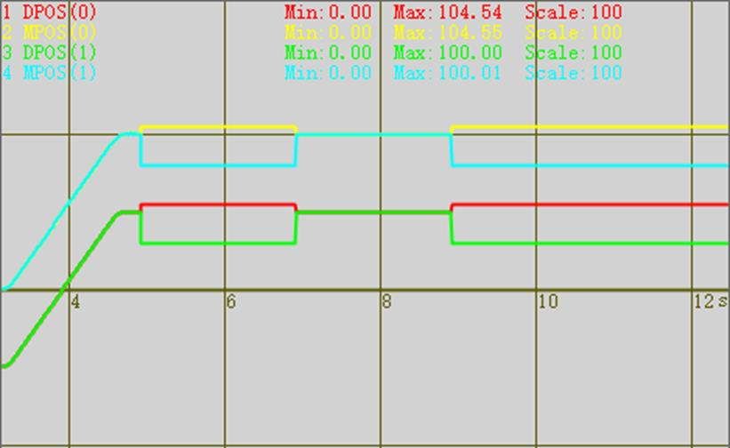

|
类型 |
运动设置指令 |
|
描述 |
设置轴的螺距补偿，扩展轴无效。 每点的补偿脉冲个数存储在TABLE表里面。 |
|
语法 |
PITCH2SET(enable,startposx,startposy,disonex,disoney,maxpointx,maxpointy,tableindex) enable：0- 关闭补偿，1- XY补偿，2- XYX补偿，3- XYY补偿 !注意: 2模式的BASE轴顺序必须 X1, Y, X2; 此时X2的补偿值使用X1的补偿. !注意: 3模式的BASE轴顺序必须 X, Y1, Y2; 此时Y2的补偿值使用Y1的补偿. startpos：开始补偿的mpos位置，units单位，startpos对应的点不存储 disone：每个点之间的距离，units单位 maxpoint：补偿的总点数 tablenum：螺距补偿表存储的table位置，从startpos下一个点开始存储，脉冲数单位，每个点存储两个数据，表示X方向偏差值与Y方向偏差值。先存储第一行(X方向)，再存储第二行。总共占用 maxpointx*maxpointy*2 个TABLE位置 支持动态修改补偿参数； 补偿开始或关闭时，调整dpos,mpos，而不是产生运动使得dpos，mpos正确。
!注意: x轴号要小于y轴号, 否则可能轻微不同步. !必须先设置ATYPE, 然后设置补偿; 修改ATYPE时, 先关闭补偿. !设置补偿时, 轴要位于IDLE停止状态. !补偿根据MPOS_ORI来计算, 带反馈的轴, 必须先保证MPOS反馈值正确. |
|
适用控制器 |
4系列(VERSION_BUILD > 230511)特殊固件支持，比较占CPU，标准固件不支持 |
|
例子 |
BASE(0,1) ATYPE=5,5 UNITS=100,100 SPEED=100,100 ACCEL=500,500 DECEL=500,500 DPOS=0,0 MPOS=0,0 TABLE(0,10*UNITS(0),-20*UNITS(0),-20*UNITS(0),-40*UNITS(0),0*UNITS(0),-0*UNITS(0)) delay(10) trigger PITCH2SET(1,0,0,90,90,2,2,0) MOVE(100,100) WAIT IDLE delay(100) delay(100) PITCH2SET(0) '关闭补偿 delay(2000) PITCH2SET(1,0,0,90,90,2,2,0) '不运动开启补偿，查看DPOS值 delay(2000) PITCH2SET(0)
该波形图，为了更好的显示补偿效果，把轴0/1的脉冲输出，接入到了轴6/7的编码器输入上，方便观察规划位置以及实际位置的区别，以看出补偿效果 DPOS(0)偏移-50，垂直刻度100 MPOS(0)偏移0，垂直刻度100 DPOS(1)偏移-50，垂直刻度100 MPOS(1)偏移0，垂直刻度100  |
|
相关指令 |